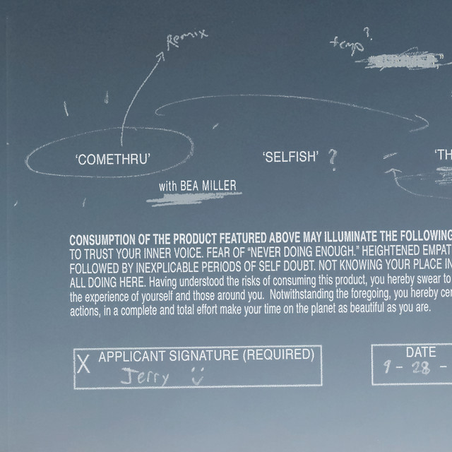
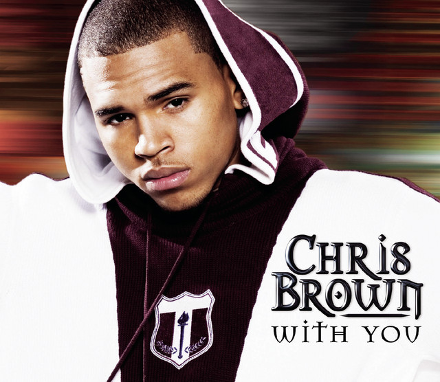
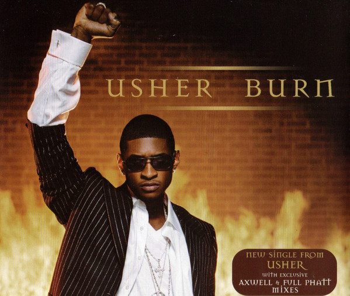

My Beat
lofi
Sunflower by Rex Orange County
“Sunflower” is dedicated to Rex's former girlfriend Thea, who he previously lived with in South London.
The song shows his complete infatuation and almost obsession for this girl.
The metaphor is that she is a sunflower, which symbolizes her purity, beauty and delicacy.
Comethru by Jeremy Zucker
In the song, Jeremy sings about how he dealt with the idea of working while his friends were out celebrating their last summer before 18.
In a tweet, Jeremy also stated that he wrote the song all alone during a summer while being bored and lonely.
Bad Idea by Shiloh Dynasty
The song itself appears to be about Shiloh's feelings for someone and their feelings towards her, or lack thereof, hence the eponymous title.
The sentiment that being in love with this person is a bad idea is echoed throughout the entirety of the song,
which really allows the fact that unreciprocated love is a bad idea to be interpreted.
R&B
Miss Independent by Ne-Yo

On “Miss Independent”, Ne-Yo talks about falling in love with a woman who is in control of her own life and is so independent that she doesn't even pay much attention to men because she's fulfilled on her own.
For Ne-Yo, he's attracted to her because she's very confident, and does things with conviction and initiative just like a boss would.
In other words, this lady takes good care of herself so effortlessly and is possibly in a managerial position of some sort. She's got her whole life sorted and this is the exact kind of woman he needs.
With You by Chris Brown
"With You" is a song by American recording artist Chris Brown for his second studio album, Exclusive (2007).
The song was written by Brown, Johntá Austin, Tor Erik Hermansen, Mikkel Eriksen, Espen Lind and Amund Bjørklund, while production was helmed by Stargate.
The song was released as the album's third single on December 4, 2007, in the United States. It was later released internationally on March 21, 2008.
"With You" is composed as a midtempo R&B ballad that features an acoustic guitar as the base of the arrangement.
Burn by Usher
 The song was produced by Dupri and Cox for Usher's fourth studio album, Confessions (2004).
Originally planned as the album's lead single, "Burn" was pushed back after favorable responses for the song "Yeah!".
"Burn" was released as the second single from the album on March 21, 2004.
Hiphop
Esmi by Because
Pinoy rapper Because describes his music as trap soul, a sub-genre amalgam of rap, soul, and R&B. And at his young age, he has already made his mark in the Pinoy rap scene with a breakthrough song in “Marlboro Black.”
Because released his full-length debut album “Heartbreak SZN” last 2018 — a 13-track, chilled-out album that features this young rapper's innate skills.
This album includes the singles “Sandali,” fan-favorite “OTW,” naughty “Gilid,” and his 2017 breakthrough track “Marlboro Black.”
2019 saw the release of the melodic more analog-sounding “Direk” which hints at the direction that Because is taking on his upcoming 2nd album entitled “Rowena.”
ikaw lang by Kiyo
Kiyo is a Filipino rapper and musical artist who is known for his previous songs such as Eba, Dantay, G, Ano Na, Ikaw Lang, and Urong Sulong with Alisson Shore.
He frequently keeps releasing new music. His new song expresses his appreciation for life's trivial pleasures.
This artist has already made a name for himself in the Filipino rap and hip-hop scene.
He is gaining many fans through his meaningful songs.
PSG by Al James
Al James is a famous Rapper, who was born on August 19, 1991 in . Alvin James P. Manlutac (born August 19, 1991),
known professionally as Al James, is a Filipino rapper and songwriter.
He is known for his songs “Pahinga”,”Shot Shot”,”Pa-Umaga” and “Latina”.